data_dir = "../data"Metadata
Course: DS 5001
Module: 12 Lab
Topc: Sentiment and Plot in Novels
Author: R.C. Alvarado
Date: 12 April 2023Purpose: Explore ways to measure sentiment and track plot in all the novels.
Set Up
Config
lib_file = f'{data_dir}/syuzhet/combo-LIB.csv' # Also created in previous notebookImport
import pandas as pd
import numpy as np
import matplotlib.pyplot as plt
import seaborn as sns
import scipy as sp
import scipy.fft as fftsns.set()Get the Books
Grab a subset of books to explore.
M = {
bag:pd.read_pickle(f"{data_dir}/syuzhet/M_{bag}.pickle")
for bag in "SENTS PARAS CHAPS".split()
}M['SENTS']| nrc_sentiment | bing_sentiment | syu_sentiment | gi_sentiment | ||||
|---|---|---|---|---|---|---|---|
| book_id | chap_num | para_num | sent_num | ||||
| 105 | 1 | 1 | 0 | 0.000000 | -0.049020 | -0.020098 | 0.019608 |
| 1 | 0.000000 | 0.000000 | 0.000000 | 0.000000 | |||
| 2 | 0 | 0.000000 | 0.000000 | 0.000000 | 0.000000 | ||
| 3 | 0 | 0.062500 | 0.000000 | 0.037500 | 0.000000 | ||
| 1 | 0.000000 | -0.051282 | -0.012821 | 0.000000 | |||
| ... | ... | ... | ... | ... | ... | ... | ... |
| usher | 1 | 47 | 0 | -0.100000 | -0.100000 | -0.180000 | -0.200000 |
| 1 | -0.058824 | -0.058824 | -0.008824 | -0.117647 | |||
| 2 | -0.060606 | -0.060606 | -0.056061 | 0.000000 | |||
| 3 | 0.023256 | 0.023256 | 0.019767 | 0.023256 | |||
| 4 | -0.013699 | -0.013699 | -0.015753 | 0.013699 |
181987 rows × 4 columns
LIB = pd.read_csv(lib_file).set_index('book_id')LIB.head(10)| author_id | title | corpus | |
|---|---|---|---|
| book_id | |||
| secretadversary | christie | secretadversary | novels |
| styles | christie | styles | novels |
| moonstone | collins | moonstone | novels |
| adventures | doyle | adventures | novels |
| baskervilles | doyle | baskervilles | novels |
| scarlet | doyle | scarlet | novels |
| signoffour | doyle | signoffour | novels |
| marieroget | poe | marieroget | novels |
| ruemorgue | poe | ruemorgue | novels |
| northangerabbey | austen | northangerabbey | novels |
Define Classes
Jockers’ original FFT function params
| raw_values | the raw sentiment values calculated for each sentence |
| low_pass_size | The number of components to retain in the low pass filtering. Default = 3 |
| x_reverse_len | the number of values to return. Default = 100 |
| padding_factor | the amount of zero values to pad raw_values with, as a factor of the size of raw_values. Default = 2. |
| scale_vals | Logical determines whether or not to normalize the values using the scale function Default = FALSE. If TRUE, values will be scaled by subtracting the means and scaled by dividing by their standard deviations. See ?scale |
| scale_range | Logical determines whether or not to scale the values from -1 to +1. Default = FALSE. If set to TRUE, the lowest value in the vector will be set to -1 and the highest values set to +1 and all the values scaled accordingly in between. |
Fast Fourier Transform. See https://rdrr.io/cran/syuzhet/man/get_transformed_values.html
class Transforms:
def FFT(raw_values,
low_pass_size=3,
x_reverse_len=100,
padding_factor=2,
scale_values=False,
scale_range=False):
if low_pass_size > len(raw_values):
sys.exit("low_pass_size must be less than or equal to the length of raw_values input vector")
raw_values_len = len(raw_values)
padding_len = raw_values_len * padding_factor
# Add padding, then fft
values_fft = fft.fft(raw_values, padding_len)
low_pass_size = low_pass_size * (1 + padding_factor)
keepers = values_fft[:low_pass_size]
# Preserve frequency domain structure
modified_spectrum = list(keepers) \
+ list(np.zeros((x_reverse_len * (1+padding_factor)) - (2*low_pass_size) + 1)) \
+ list(reversed(np.conj(keepers[1:(len(keepers))])))
# Strip padding
inverse_values = fft.ifft(modified_spectrum)
inverse_values = inverse_values[:x_reverse_len]
transformed_values = np.real(tuple(inverse_values))
return transformed_values
def DCT(raw_values,
low_pass_size=5,
x_reverse_len=100,
dct_type=3):
if low_pass_size > len(raw_values):
raise ValueError("low_pass_size must be less than or equal to the length of raw_values input vector")
values_dct = fft.dct(raw_values, type = dct_type) # 2 or 3 works well
keepers = values_dct[:low_pass_size]
padded_keepers = list(keepers) + list(np.zeros(x_reverse_len - low_pass_size))
dct_out = fft.idct(padded_keepers)
return dct_outclass SyuzhetBook:
M = None
LIB = None
def __init__(self, book_id, bag='SENTS', src='nrc'):
self.book_id = book_id
self.book_title = self.LIB.loc[str(book_id)].title
self.bag = 'SENTS'
self.src = 'nrc'
self.S = self.M[bag].loc[self.book_id, f"{src}_sentiment"].reset_index(drop=True)
print(self.book_id, self.book_title, self.bag, self.src)
def plot_raw(self):
plot_cfg = dict(
figsize=(25, 5),
legend=False,
fontsize=16)
self.S.plot(**plot_cfg)
def plot_smooth(self,
method='DCT',
low_pass_size=6,
x_reverse_len=100):
plot_cfg = dict(
figsize = (25, 5),
legend = False,
fontsize = 16,
title = f"{self.book_title}: {self.src})"
)
if method == "DCT":
X = Transforms.DCT(self.S.values, low_pass_size=low_pass_size, x_reverse_len=x_reverse_len)
elif method == "FFT":
X = Transforms.FFT(self.S.values, low_pass_size=low_pass_size, x_reverse_len=x_reverse_len, padding_factor = 1)
# Scale Range
X = (X - X.mean()) / X.std()
pd.Series(X).plot(**plot_cfg);
def plot_rolling(self,
win_type='cosine',
win_div=3,
norm=None):
window = round(self.S.shape[0]/win_div)
plot_title = self.book_title + f' (rolling; div={win_div}, w={window}, {self.src})'
self.S.rolling(window, win_type=win_type).mean().plot(figsize=(25,5), title=plot_title)
# ax.set_title(plot_title, fontsize=20)Explore
# LIBSyuzhetBook.M = M
SyuzhetBook.LIB = LIBPersuasion
pg105 = SyuzhetBook(105)105 PERSUASION SENTS nrcpg105.plot_raw()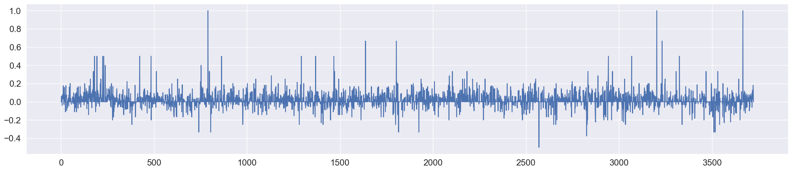
pg105.plot_smooth('FFT', low_pass_size=3)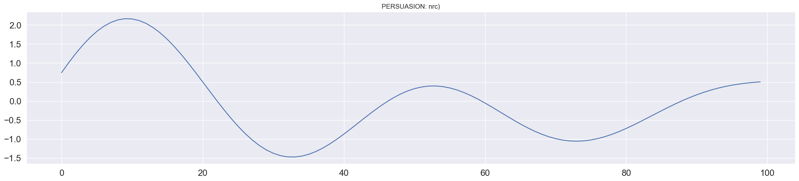
pg105.plot_smooth()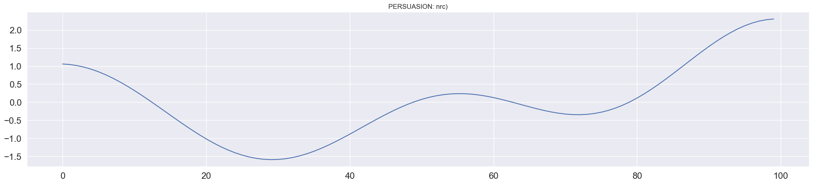
pg105.plot_rolling()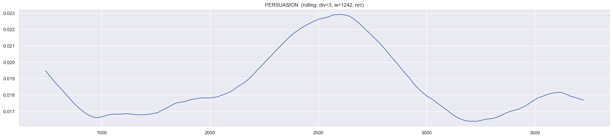
Persuasion by PARAS
pg105_paras = SyuzhetBook(105, bag='PARAS')105 PERSUASION SENTS nrcpg105_paras.plot_smooth()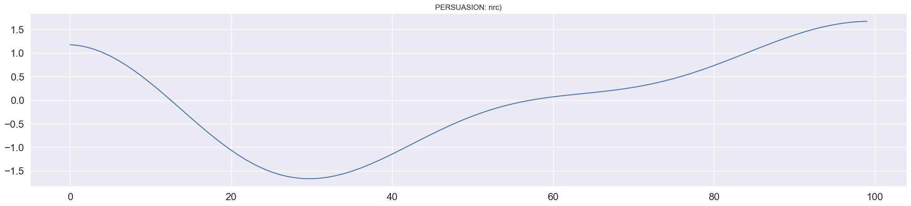
Moby Dick
pg2701 = SyuzhetBook(2701)2701 MOBY DICK OR THE WHALE SENTS nrcpg2701.plot_raw()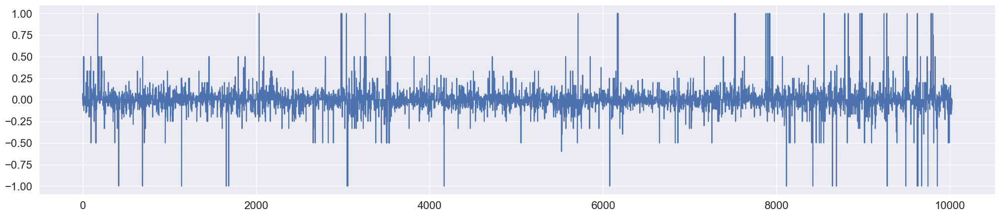
pg2701.plot_smooth('FFT', low_pass_size=3)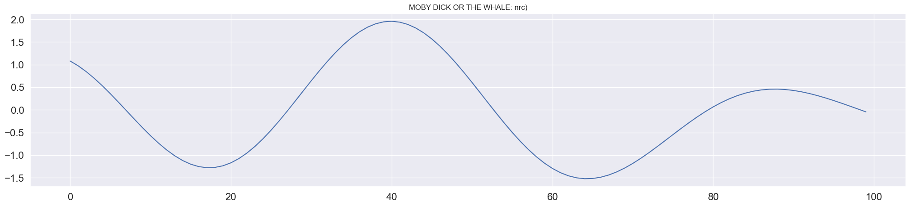
pg2701.plot_smooth()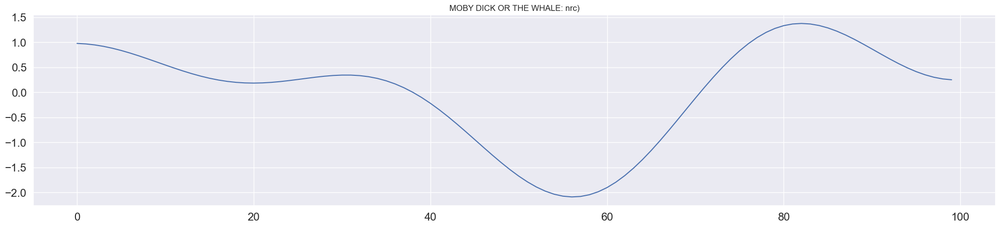
pg2701.plot_rolling()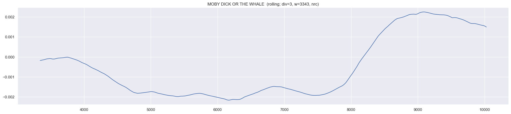
Frankenstein
frankenstein = SyuzhetBook('frankenstein')frankenstein frankenstein SENTS nrcfrankenstein.plot_raw()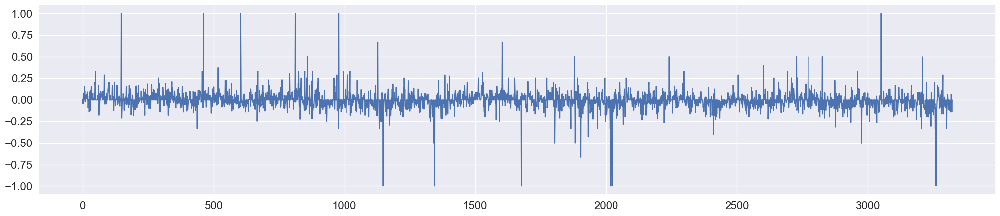
frankenstein.plot_smooth('FFT', low_pass_size=3)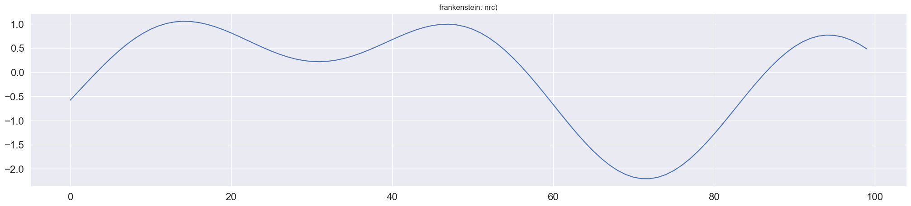
frankenstein.plot_smooth()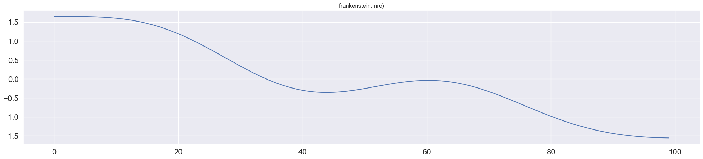
frankenstein.plot_rolling()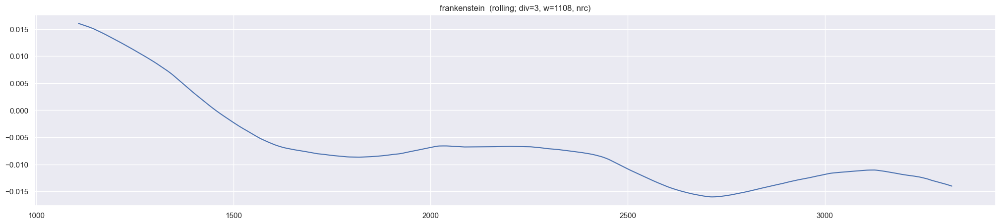
Dracula
dracula = SyuzhetBook('dracula')dracula dracula SENTS nrcdracula.plot_raw()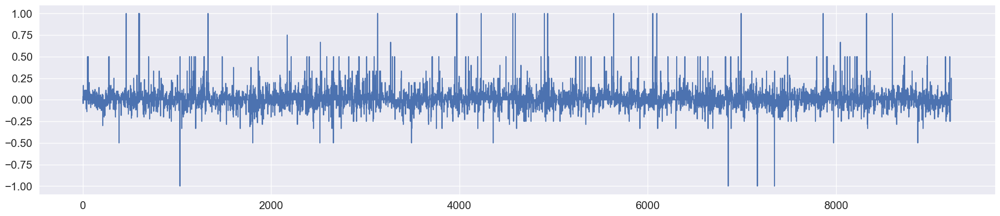
dracula.plot_smooth('FFT', low_pass_size=3)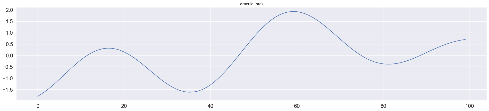
dracula.plot_smooth()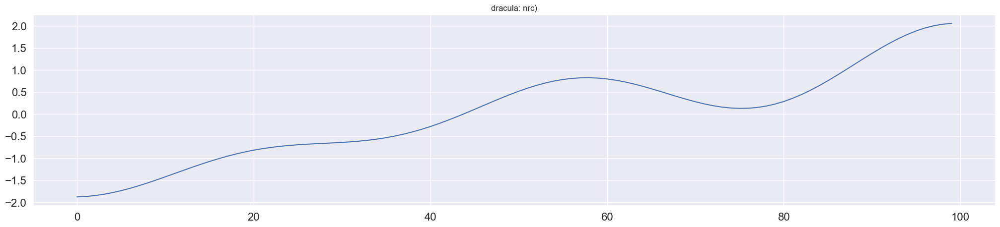
dracula.plot_rolling()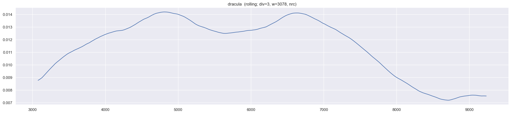
Pride and Prejudice
pg1342 = SyuzhetBook(1342)1342 PRIDE AND PREJUDICE SENTS nrcpg1342.plot_raw()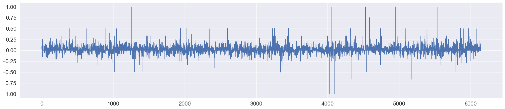
pg1342.plot_rolling()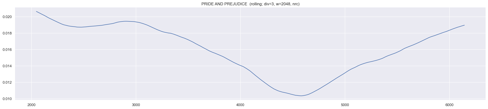
pg1342.plot_smooth()
pg1342.plot_smooth('FFT', low_pass_size=3)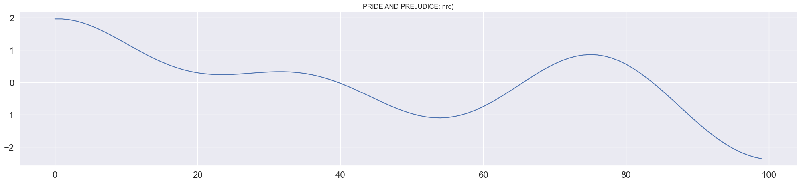
Northanger Abbey
northangerabbey = SyuzhetBook('northangerabbey')northangerabbey northangerabbey SENTS nrcnorthangerabbey.plot_raw()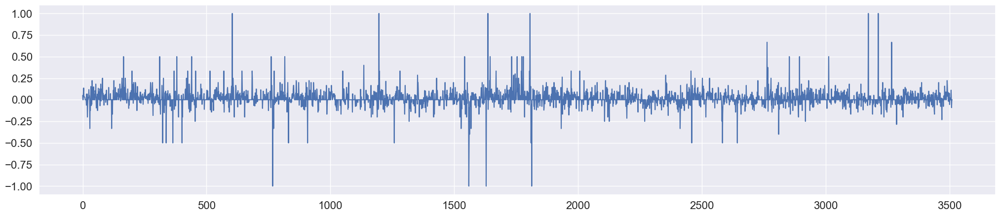
northangerabbey.plot_smooth('FFT', low_pass_size=3)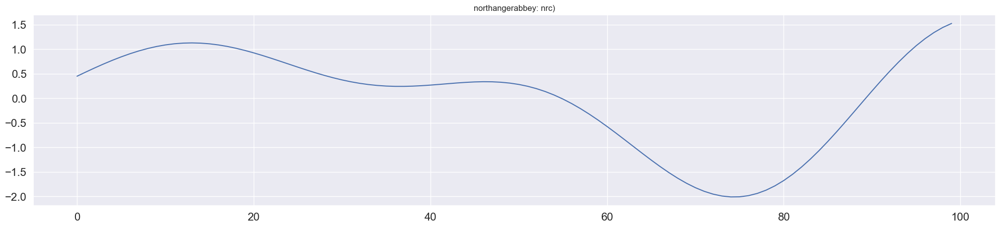
northangerabbey.plot_smooth()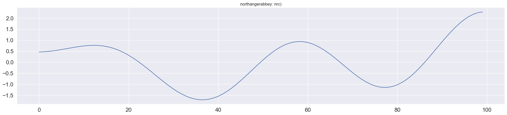
northangerabbey.plot_rolling()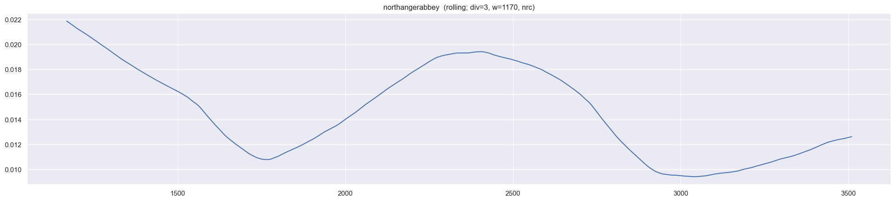
Federalist: > In the end, the two are wed. In the final pages of “Northanger Abbey,” Austen writes that the couple was brought together through mutual affection and that Henry Tinley’s affection for Catherine is rooted in gratitude for her feelings for him. She’s implying that the typically overwrought and dramatic type of romance on display in most fictitious works does not hold a candle to real love that is rooted in a commitment to one’s husband or wife. Happy endings and “perfect happiness” are often brought about through ordinary and conventional means — means that ought not to be dismissed because they are less sexy than the conventions used in a Gothic novel.
https://thefederalist.com/2018/10/09/jane-austen-pulled-off-feat-genius-northanger-abbey/
Schmoop:
Northanger Abbey has a very neat and tidy and rather clichéd ending: all the nice main characters get married to other nice characters and live happily ever after. All the mean characters end up alone. It’s like a Disney movie.
Aside from being rather predictable, this ending is also a little weird. What’s odd about this ending is that the entire novel spends a lot of time undermining the various clichés of popular Gothic novels. But it ends with a series of giant clichés, including a deus ex machina, which is a fancy Latin term meaning a convenient plot element that is dropped in out of nowhere. The deus ex machina here is that one of the nice and long suffering characters happens to marry a wealthy Viscount who has never before been mentioned. It’s completely random. And the narrator even admits that this is pretty weird and random.
The novel’s ending isn’t just clichéd, it’s totally over-the-top clichéd. So, rather than being out of step with the rest of the book, the ending actually bumps the satire up a notch and goes for broke. Like the rest of the book, the ending is still highly satirical – it exaggerates and mocks the types of sentimental and even ludicrous endings often found in Gothic novels. The ending just accomplishes the satire in a different way than the rest of the book, which relies more on clever dialogue and humorously disrupted expectations. Instead of letting the characters supply the humor through their words and actions, the ending utilizes outrageous plot devices and ironic narrative commentary. Still, why Jane Austen decided to go with an over-the-top ending instead of a more subtle ending is debatable.
https://www.shmoop.com/study-guides/literature/northanger-abbey/analysis/ending